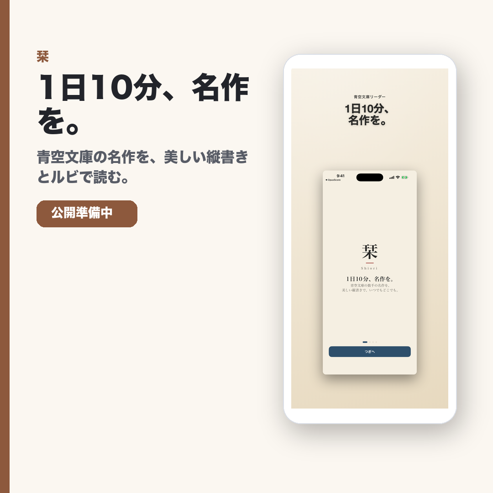

栞 / iOS / iPadOS / macOS / Landing Page
青空文庫を縦書きとルビで読む読書アプリ
青空文庫の名作を、スマホやMacで縦書き・ルビつきで読みたい人向けの読書アプリ導線です。

誰向けか
日本文学や青空文庫を、スマホでも紙の文庫に近い感覚で読みたい人。
課題
横書きや余白の少ない表示では、古典や日本文学を長く読み続けにくいことがあります。
このアプリでできること
縦書き、ルビ、読みやすい余白で、青空文庫の作品を日々の読書に戻しやすくします。
ストアURLの公開反映待ち中はLPへ案内します。
検索キーワード
- 青空文庫
- 読書アプリ
- 縦書き
- ルビ
- 日本文学
- 名作
FAQ
Q. 青空文庫の作品を読めますか?
A. 青空文庫の名作を読みやすくする体験を目指しています。
Q. 短い時間でも続けられますか?
A. 1日10分のような短い読書時間でも戻りやすい設計です。